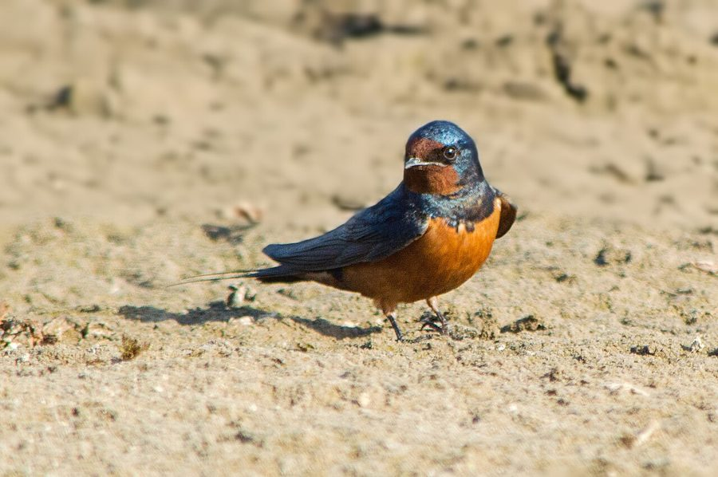

घर अबाबीलBarn Swallow
Hirundo rustica · Hirundinidae · BRD-0073

- Scientific name
- Hirundo rustica Linnaeus, 1758
- Family
- Hirundinidae
- Hindi
- घर अबाबील
- Status here
- native
- IUCN
- LC
When to look कब देखें
Expected mainly in April, May, June, July, August, September.
घर अबाबील / Barn Swallow
Hirundo rustica Linnaeus, 1758 — Hirundinidae
घर अबाबील (कॉमन स्वैलो) — पूर्वी उत्तर प्रदेश के ग्रामीण क्षेत्रों, कृषि मैदानों और जलाशयों के ऊपर हवा में तेज़ी से उड़ता हुआ देखा जाने वाला एक अत्यंत फुर्तीला और हवाई कीटभक्षी पक्षी (aerial insectivore) है। यह एक प्रवासी पक्षी है जो पूर्वी उत्तर प्रदेश में ग्रीष्मकालीन प्रवासी (summer breeder) और मार्ग प्रवासी के रूप में अप्रैल से अगस्त-सितंबर तक रहता है, जिसके बाद दक्षिण भारत और उप-सहारा अफ्रीका की ओर सर्दियों के लिए चला जाता है। इसकी सबसे बड़ी पहचान इसकी पीठ का चमकदार गहरा नीला-काला रंग (glossy blue-black upperparts), हल्का क्रीम रंग का पेट, माथे और गले का गहरा कत्थई-लाल रंग (chestnut forehead and throat), तथा इसकी गहरी दुमुंही पूंछ जिसके किनारे सुई की तरह लंबे (deeply forked tail with long streamers) होते हैं। यह हवा में उड़ते हुए बड़े ही लचीले और कलाबाज़ी भरे अंदाज़ में कीड़ों को पकड़ता है। यह मिट्टी के गीले गोलों (mud pellets) को आपस में जोड़कर ग्रामीण घरों के छज्जों के नीचे एक कटोरे जैसा मजबूत घोंसला बनाता है।
Quick Identification त्वरित पहचान
| Feature | Description |
|---|---|
| Size | Small, slender aerial bird (15–19 cm total length including tail streamers); long pointed wings |
| Tail Streamers | Diagnostic deeply forked tail with very long, thin outer tail feathers (streamers) |
| Colouration | Metallic blue-black upperparts; chestnut forehead and throat; creamy-white underparts |
| Breast Band | A dark blue-black collar or band separating the chestnut throat from the white breast |
| Flight | Graceful, swift, undulating flight with rapid wingbeats and long glides close to water/fields |
| Bare Parts | Bill is very short, flat, black with a very wide gape; irises are dark brown; legs are extremely short |
Field tip: Look over open village ponds or agricultural fields in summer. Watch for small, fast-flying birds sweeping low over the water surface to drink or catch insects. Their deeply forked tails and blue-black backs are distinctive. They often perch in rows on telephone wires. The male has longer tail streamers and is shown in the field tip.
Morphology आकारिकी
Biometrics (typical measurements in the northern Indian plains showing tail streamer length variation):
| Measurement | Range |
|---|---|
| Total length | 150–190 mm (including tail streamers of 30–60 mm) |
| Wing (flattened chord) | 110–125 mm |
| Tail | 75–130 mm (including streamers) |
| Tarsus | 9–11 mm |
| Bill (culmen from base) | 8–10 mm |
| Weight | 16–22 g |
Plumage: The upperparts are glossy metallic blue-black. The forehead is rich chestnut-rufous. The chin and throat are chestnut-rufous, bordered below by a broad, dark blue-black breast band. The rest of the underparts are creamy-buff or dull white. The tail is deeply forked, blackish-blue, with a row of white spots across the inner webs of the tail feathers, visible when fanned, and very long, narrow outer tail feathers (streamers).
Bare parts: The bill is short, broad-based, flat, and black. The gape is extremely wide, acting like a net to scoop up insects in flight. The irises are dark brown. The legs and feet are blackish, extremely small, and weak (suited only for perching, not walking).
Vocalisations
Highly vocal in flight and when perched, producing sweet, rapid warbling songs.
- Song: A rapid, musical, bubbling warble ending in a dry mechanical rattle: witt-witt-witt-chitt-chitt-trrr, delivered by males from wires or roofs.
- Alarm call: A sharp, high-pitched svee or tsink, produced when cats or hawks fly near the nesting area.
Behaviour & Ecology व्यवहार और पारिस्थितिकी
- Aerial insectivore: Spends almost the entire day in the air, flying at high speeds. It drinks by skimming low over the water surface, scooping up droplets in flight. It catches gnats, mosquitoes, and flies using its wide mouth.
- Rafter nesting: Displays a close relationship with human dwellings. The nest is a cup made of mud pellets mixed with saliva, lined with grass and feathers. They attach the mud cup to rafters under verandah roofs, inside cowsheds, or under concrete lintels.
- Migratory staging: Before departing south in autumn, swallows gather in large flocks of thousands, roosting in local sugarcane fields and tall riverine reedbeds.
Life Cycle / Phenology जीवन चक्र
- Breeding season: April to August in UP, raising one or two broods during the summer and early monsoon.
- Nesting: Collects wet mud from pond edges to build its nest.
- Nest site: Placed on beams, rafters, or walls under roofs of village houses or cattle sheds, protected from rain.
- Clutch size: 3 to 5 white eggs, speckled with reddish-brown.
- Incubation: 14–16 days, incubated mainly by the female.
- Fledging: Both parents feed the chicks on packets of insects (boluses) caught in flight. The young fledge in about 18–22 days, returning to the nest to sleep for a few nights.
Host Plants or Prey आहार
Primary food items:
- Flying Insects: Flies, midges, mosquitoes, flying ants, small moths, beetles, and dragonflies caught entirely on the wing.
Predators / Natural Enemies शत्रु
- Raptors: Hobby falcons and Shikras (Accipiter badius) are major predators, catching swallows in flight.
- Corvids: House Crows (Corvus splendens) raid mud nests under eaves to eat eggs or nestlings.
- Mammals: Domestic cats stalk perched swallows or climb rafters to reach nests.
Agricultural / Human Relevance कृषि प्रासंगिकता
Natural insect controller. By consuming thousands of mosquitoes, flies, and midges daily per bird, Barn Swallows help control vectors of human diseases (like malaria and dengue) and crop pests near villages.
Conservation and legal status: Protected under Schedule IV of the Wildlife Protection Act, 1972. Widespread and common, but threatened by the loss of mud sources due to concrete construction, nest destruction by villagers who find them messy, and pesticide use which reduces flying insects.
Expected Locally स्थानीय रूप से अपेक्षित
Not a field record. Written from published accounts for eastern Uttar Pradesh. No confirmed local sighting yet — if you have seen it, that is what the atlas needs.
अभी तक स्थानीय पुष्टि नहीं। यह विवरण प्रकाशित स्रोतों से है, किसी अवलोकन से नहीं।
A common summer visitor and breeding resident in the Basti district. They are regularly observed from April to August nesting under the roofs of old brick houses and cowsheds in the Harraiya and Vikramjot blocks. Large groups are seen perched on overhead electricity wires over agricultural fields.
Distribution वितरण
Global range: A cosmopolitan breeding species across North America, Europe, Asia, and North Africa; migrates south to winter in South America, sub-Saharan Africa, and South/Southeast Asia.
In India: Breeds in the Himalayas and northern plains; winter visitors from Siberia winter in peninsular India, while northern plain populations migrate south.
In Uttar Pradesh: A common summer breeding visitor and passage migrant state-wide.
In Basti district / eastern UP: Recorded regularly from April to September in all blocks, nesting in rural homes.
Research Questions शोध प्रश्न
Anyone can investigate these | कोई भी इन प्रश्नों की जाँच कर सकता है
- How many trips do parent Barn Swallows make to collect mud pellets for a single nest? — Count and record mud-carrying flights.
- What is the preference of Barn Swallows for nesting inside traditional clay tile roofs versus modern concrete lintels in Basti? / घर अबाबील बस्ती में खपरैल के घरों और आधुनिक कंक्रीट के छज्जों में से किसमें घोंसला बनाना अधिक पसंद करती है? — Survey nest distribution.
- What is the average feeding frequency (trips per hour) of a pair of swallows feeding five nestlings? — Observe nest feeding rates during the day.
- How do Barn Swallows and House Swifts compete for nesting spaces under village roofs? — Document nesting disputes between the species.
- Does the date of departure of Barn Swallows from Basti correlate with the onset of monsoon winds? / क्या बस्ती से घर अबाबील के प्रस्थान की तारीख मानसून की हवाओं की शुरुआत से जुड़ी होती है? — Record and correlate departure dates with weather data.
Similar Species मिलती-जुलती प्रजातियाँ
| Species | How to tell apart | हिंदी |
|---|---|---|
| Wire-tailed Swallow (Hirundo smithii) | Bright chestnut crown; pure white throat and underparts (lacks black collar); thin wire-like tail | तार-पूंछ अबाबील — चमकीला लाल सिर, सफ़ेद छाती, पतली पूँछ |
| Red-rumped Swallow (Cecropis daurica) | Rufous-orange rump; streaked cream underparts; lacks black collar and chestnut throat | लाल-कमर अबाबील — नारंगी कमर, धारीदार पेट |
| House Swift (Apus affinis) | Sooty-black overall with a white rump; short, square tail (no streamers); rapid wing-flick flight | घर अबाबील (स्विफ्ट) — काला रंग, सफ़ेद कमर, चौकोर पूँछ |
Field rule: Small blue-black aerial bird with a chestnut throat and forehead, a dark breast collar, a deeply forked tail with long streamers, nesting under village roofs, is a Barn Swallow.
Taxonomy & Classification वर्गीकरण
Original description. Carl Linnaeus described the Barn Swallow as Hirundo rustica in 1758 in his Systema Naturae (ed. 10, vol. 1, p. 191). The type locality was Sweden. The genus name Hirundo is Latin for a swallow. The specific name rustica is Latin for rustic or of the countryside, referencing its association with rural barns and dwellings.
Subspecies. Six subspecies are recognized globally. The nominate subspecies breeding and passing through UP is:
| Subspecies | Authority | Range | Notes |
|---|---|---|---|
| H. r. rustica | Linnaeus, 1758 | Europe and Asia; winters in Africa and South Asia | UP subspecies; nominate form; widely distributed across the Palearctic |
Family and order placement. Placed in the order Passeriformes, family Hirundinidae (swallows and martins).
Phylogenetic notes. Hirundo rustica belongs to a species complex of swallows that diverged during the Pleistocene, showing high evolutionary success due to nesting associations with human shelters.
IUCN status rationale. Listed as Least Concern (LC) due to its massive global range and stable population, showing high adaptability to agricultural and rural landscapes.
Photo Gallery फोटो गैलरी
References संदर्भ
- Linnaeus, C. (1758). Systema Naturae. Tenth Edition. Holmiae, p. 191. [original description]
- Ali, S. & Ripley, S. D. (1999). Handbook of the Birds of India and Pakistan. Vol. 5. Oxford University Press, New Delhi.
- Grimmett, R., Inskipp, C. & Inskipp, T. (2011). Birds of the Indian Subcontinent. 2nd ed. Christopher Helm, London.
- Turner, A. & Rose, C. (1989). Swallows and Martins: An Identification Guide and Handbook. Houghton Mifflin, Boston.
- BirdLife International (2024). Hirundo rustica. IUCN Red List of Threatened Species. Ver. 2024.
- GBIF Occurrence Data — Hirundo rustica, Uttar Pradesh (2010–2025).
Source file: species/fauna/birds/barn_swallow.md